DC Motor Position: State-Space Methods for Controller Design
Key MATLAB commands used in this tutorial are: ss , order , det , ctrb , place , step
Contents
From the main problem, the dynamic equations in state-space form are given below.
(1)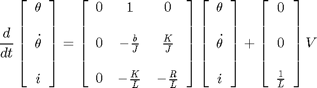
(2)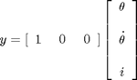
The above has the form of a standard set of state-space equations as described below.
(3)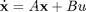
(4)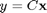
For the original problem setup and the derivation of the above equations, please refer to the DC Motor Position: System Modeling page
With a 1-radian step reference, the design criteria are the following.
- Settling time less than 0.040 seconds
- Overshoot less than 16%
- No steady-state error, even in the presence of a step disturbance input
First create a new m-file and type in the following commands (refer to main problem for the details of getting these commands).
J = 3.2284E-6;
b = 3.5077E-6;
K = 0.0274;
R = 4;
L = 2.75E-6;
A = [0 1 0
0 -b/J K/J
0 -K/L -R/L];
B = [0 ; 0 ; 1/L];
C = [1 0 0];
D = 0;
motor_ss = ss(A,B,C,D);
Designing the full state-feedback controller
Since all of the state variables in our problem are very easy to measure (simply add an ammeter for current, a tachometer for speed, and a potentiometer for position), we can design a full-state feedback controller for the system without worrying about having to add an observer. The control law for a full-state feedback system has the form u = r - Kc x. The associated block diagram is given below.

Recall that the characteristic polynomial for this closed-loop system is the determinant of sI-(A-B*Kc) where s is the Laplace variable. Since the matrices A and B*Kc are both 3x3 matrices, there should be 3 poles for the system. This fact can be verified with the MATLAB command order. If the given system is controllable, then by designing a full state-feedback controller we can move these three poles anywhere we'd like. Whether the given system is controllable or not can be determined by checking the rank of the controllability matrix [ B AB A^2B ...]. The MATLAB command ctrb constructs the controllability matrix given A and B. Additionally, the command rank determines the rank of a given matrix, though it can be numerically unreliable. Therefore, we will use the command det to calculate the determinant of the controllability matrix where a full rank matrix has a non-zero determinant. The following commands executed at the command line will verify the system's order and whether or not it is controllable.
sys_order = order(motor_ss) determinant = det(ctrb(A,B))
sys_order =
3
determinant =
-3.4636e+24
From the above, we know that our system is controllable since the determinant of the controllability matrix is not zero and hence we can place the system's closed-loop poles anywhere in the s-plane. We will first place the poles at -200, -100+100i and -100-100i. By ignoring the effect of the first pole (since it is faster than the other two poles), the dominant poles correspond to a second-order system with zeta = 0.5 corresponding to 0.16% overshoot and sigma = 100 which corresponding to a settling time of 0.040 seconds. Once we have determined the pole locations we desire, we can use the MATLAB commands place or acker to determine the controller gain matrix, Kc, to achieve these poles. We will use the command place since it is numerically better conditioned than acker. However, if we wished to place a pole with multiplicity greater than the rank of the matrix B, then we would have to use the command acker. Add the following code to the end of your m-file.
p1 = -100+100i; p2 = -100-100i; p3 = -200; Kc = place(A,B,[p1, p2, p3])
Kc =
0.0013 -0.0274 -3.9989
Referring back to the equations and schematic at the top of the page, we see that employing a state-feedback law u = r - Kc x, the state-space equations become the following.
(5)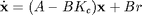
(6)
We can generate the closed-loop response to a step reference by adding the following lines to the end of your m-file. Run your m-file in the command window and you should generate a plot like the one shown below.
t = 0:0.001:0.05; sys_cl = ss(A-B*Kc,B,C,D); step(sys_cl,t)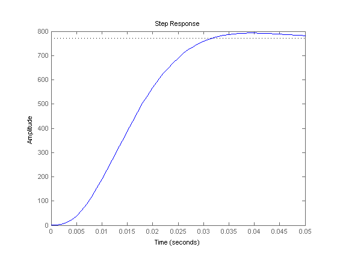
Note that our given requirements are not met, specifically, the steady-state error is much too large. Before we address this, let's first look at the system's disturbance response.
Disturbance response
In order to observe the system's disturbance response, we must provide the proper input to the system. In this case, a disturbance is physically a load torque that acts on the inertia of the motor. This load torque acts as an additive term in the second state equation (which gets divided by J, as do all the other terms in this equation). We can simulate this simply by modifying our closed-loop input matrix, B, to have a 1 / J in the second row assuming that our current input is only the disturbance.
Add the following lines to your m-file and re-run.
dist_cl = ss(A-B*Kc,[0; 1/J ; 0], C, D); step(dist_cl,t)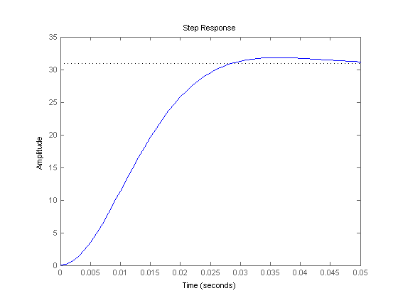
Notice that the error due to the step disturbance is non-zero. Therefore, this will also need to be compensated for.
Adding integral action
From prior examples, we know that if we put an extra integrator in series with the plant it can remove the steady-state error due to a step reference. If the integrator comes before the injection of the disturbance, it will also cancel a step disturbance input in steady state. This changes our control structure so that it now resembles the block diagram shown in the following figure.

We can model the addition of this integrator by augmenting our state equations with an extra state for the integral of the error which we will identify with the variable w. This adds an extra state equation, where the derivative of this state is then just the error, e = y - r where y = theta. This equation will be placed at the bottom of our matrices. The reference r, therefore, now appears as an additional input to our system. The output of the system remains the same.
(7)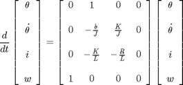
(8)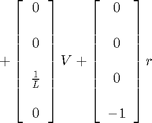
(9)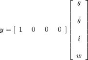
These equations represent the dynamics of the system before the loop is closed. We will refer to the system matrices in this equation that are augmented with the additional integrator state as Aa, Ba, Ca, and Da. The vector multiplying the reference input r will be referred to as Br. We will refer to the state vector of the augmented system as xa. Note that the reference, r, does not affect the states (except the integrator state) or the output of the plant. This is expected since there is no path from the reference to the plant input, u, without implementing the state-feedback gain matrix Kc.
In order to find the closed-loop equations, we have to look at how the input, u, affects the plant. In this case, it affects the system in exactly the same manner as in the unaugmented equations except now u = -Kc x - Ki w. We can also rewrite this in terms of our augmented state as u = -Ka xa where Ka = [ Kc Ki ]. Substituting this u into the equations above provides the following closed-loop equations.
(10)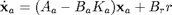
(11)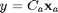
In the above, the integral of the error will be fed back, and will result in the steady-state error being reduced to zero. Now we must redesign our controller to account for the augmented state vector. Since we need to place each pole of the system, we will place the pole associated with the additional integrator state at -300, which will be faster than the other poles.
Add the following lines to your m-file which reflect the closed-loop equations presented above. Note that since the closed-loop transition matrix Aa-Ba*Ka depends on Ba, it will be used in the place command rather than Br. Running your m-file will then produce the plot shown below.
Aa = [0 1 0 0
0 -b/J K/J 0
0 -K/L -R/L 0
1 0 0 0];
Ba = [0 ; 0 ; 1/L ; 0 ];
Br = [0 ; 0 ; 0; -1];
Ca = [1 0 0 0];
Da = [0];
p4 = -300;
Ka = place(Aa,Ba,[p1,p2,p3,p4]);
t = 0:0.001:.05;
sys_cl = ss(Aa-Ba*Ka,Br,Ca,Da);
step(sys_cl,t)
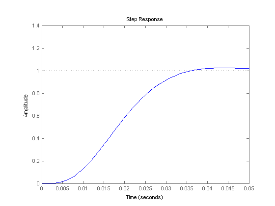 To observe the disturbance response, we use a similar approach to that used without the integral action.
dist_cl = ss(Aa-Ba*Ka,[0 ; 1/J ; 0; 0],Ca,Da); step(dist_cl,t)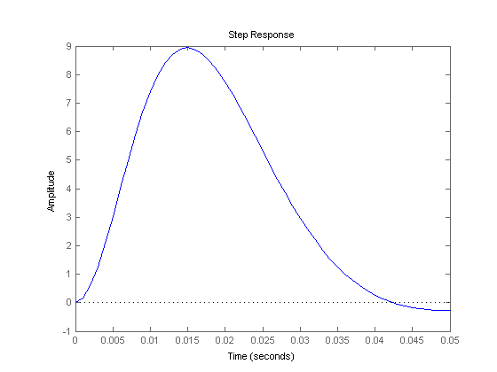
We can see that all of the design specifications are close to being met by this controller. The settle time may be a little large, but by placing the closed-loop poles a little farther to the left in the complex s-plane, this requirement can also be met.